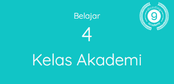

My Academy
Saat ini aku telah mengikuti 4 kelas di Dicoding Academy, 3 kelas sudah lulus di area learning path android dan 1 kelas masih onprogress di area learning path web
Jejak perjalanan menimba ilmu di Dicoding Academy
Saat ini aku telah mengikuti 4 kelas di Dicoding Academy, 3 kelas sudah lulus di area learning path android dan 1 kelas masih onprogress di area learning path web
Sampai saat ini aku telah mengikuti 10 event yang diadakan oleh Dicoding Academy, event-event yang paling aku sukai di area pembahasan android dan web. Mengikuti event ini sangat penting dan bermanfaat untuk membuka wawasan dan update dengan informasi terkini dari para narasumber yang sudah berpengalaman dan kompeten di bidangnya masing-masing. Materi-materi yang di sampaikan di setiap event itu sangat terkait dengan materi di academy yang aku tempuh, sehingga sangat relevan dan membantu pemahaman dari sisi best practice maupun konektifitasnya dengan materi lain di setiap level academy.
Semua perjalanan pasti mempunyai arah, demikian juga perjalanan belajarku di Dicoding aku arahkan dan perjuangkan untuk mencapai harapanku menjadi seorang developer yang bisa memberikan solusi aplikasi yang terintegrasi, berupa solusi aplikasi mobile berbasiskan android yang dapat diakses secara luas oleh klien/publik untuk menhandel transaksi dan informasi - yang terintegrasi melalui API dengan solusi aplikasi berbasiskan web sebagai backbone untuk memanage bisnis proses utamanya.
Selama ini melihat pemrograman android dari beberapa rekan programer yang sudah mahir sepertinya cukup rumit dan banyak yang harus dimanage, namun malah menimbulkan rasa penasaran dan keinginan untuk bisa menguasai keahlian ini.. karena selama ini ada opportunity maupun ide-ide solusi aplikasi yang ingin dibangun namun sering terkendala resource skill. Untuk itu aku berharap dengan belajar dari awal di path menjadi android developer di Dicoding Academy ini akan bisa memberikan pencerahan baik big picture maupun setiap path yang harus ditempuh untuk membangun sebuah aplikasi android yang handal serta mengadopsi design pattern dan arsitektur yang menjadi standard dunia industri saat ini maupun yang akan datang.
Memberikan solusi aplikasi mobile sangat menarik karena trend perkembangan gadget dan teknologi IT yang semakin mendukung euforia aplikasi mobile, namun tentunya perlu juga mempunyai kemampuan untuk memberikan solusi dari sisi web yang mencakup front-end maupun backend yang dapat memanage informasi dan transaksi yang digenerate dari lapangan via aplikasi mobile maupun sebaliknya dari backend yang menyediakan API dan memanage sisi admin maupun database secara dinamis. Apalagi dengan feature PWA dari sisi web akan lebih mendukung penetrasi dan experience yang lebih baik ke sisi user. Hal-hal inilah yang membuatku juga sangat tertarik untuk belajar pemrograman web di Dicoding Academy, harapanku kelak dapat membuat solusi aplikasi web yang dinamis dan progresif, serta dapat terintegrasi baik dengan solusi aplikasi mobile.
Meskipun semua perjalanan pasti mempunyai tujuan, namun tujuan perjalanan dalam dunia IT adalah tujuan yang dinamis - yang selalu akan diperbarui mengikuti perkembangan teknologi dan kebutuhan manusia dalam mencari solusi semua tantangan hidupnya yang juga selalu dinamis. Akan selalu ditemukan arah dan tujuan baru yang lebih baik dan menarik untuk dijelajahi, dan membuka kembali perjalanan baru. Untuk itu belajar adalah perjalanan yang tanpa akhir sampai akhir hayat, agar dapat didarmabaktikan untuk memberi solusi dan kebaikan bagi sesama. Terimakasih Dicoding Academy, telah menjadi salah satu tempat persinggahan perjalanan belajarku.